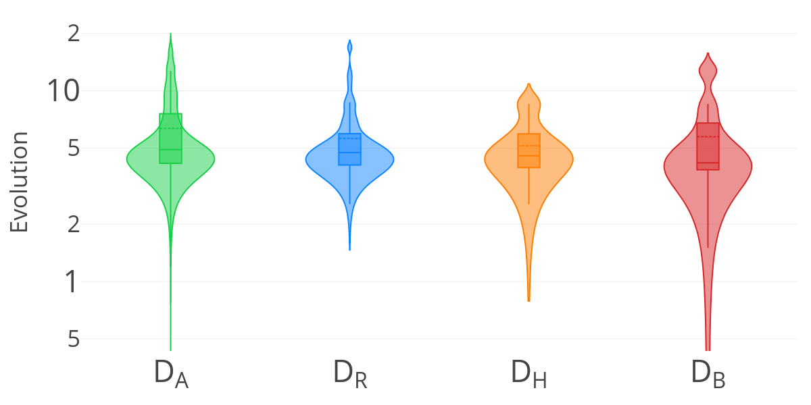
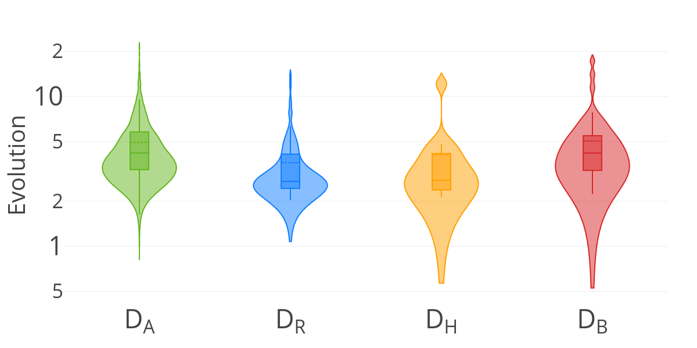
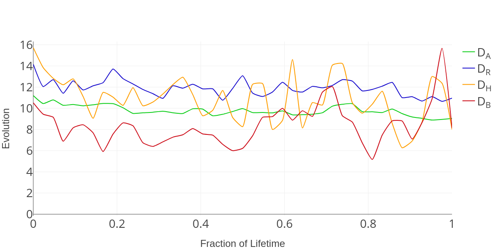
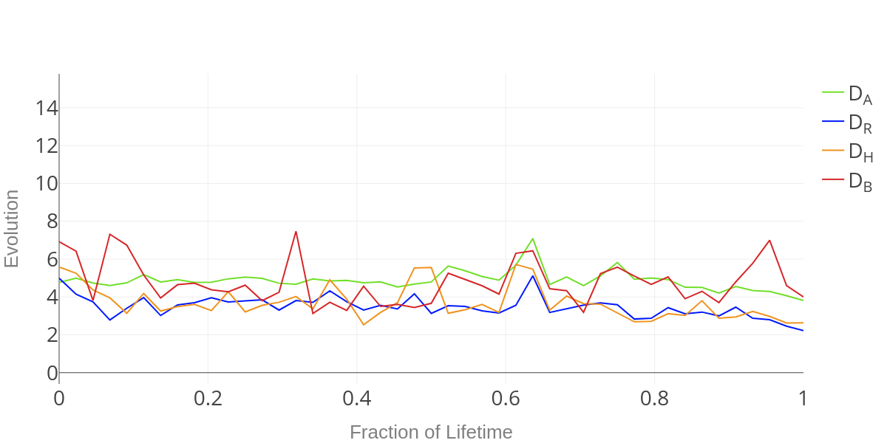
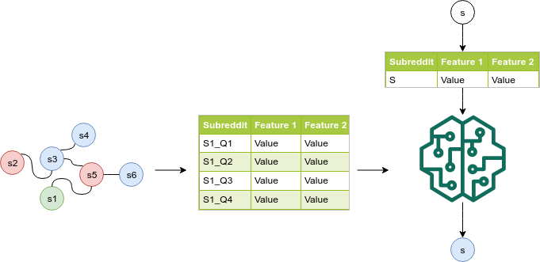
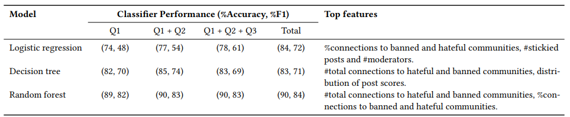
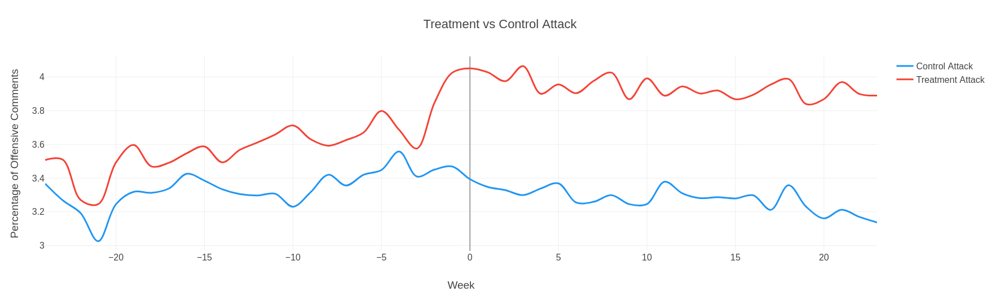
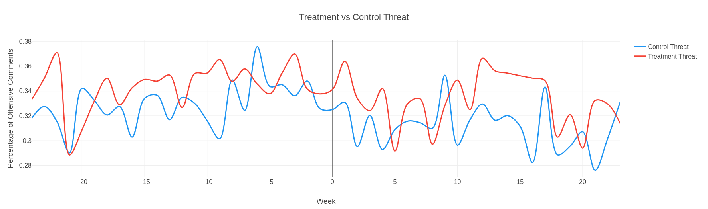
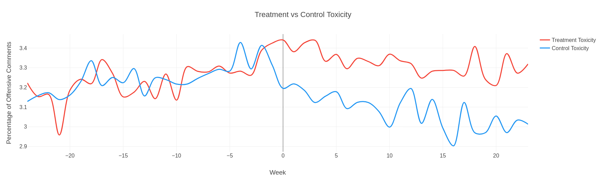
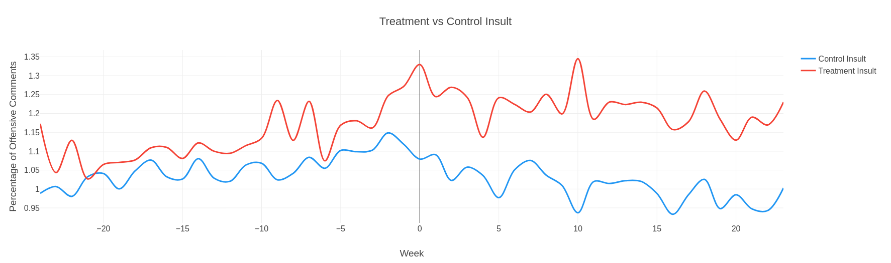

Introduction
Reddit, "the front page of the internet", has often found its communities play a prominent role in the origination and propagation of hateful discourse. The sheer number of posts and comments each day makes community moderation an arduous task for the handful of administrators on Reddit. Consequently, transgressions continue unchecked until they leak into the real world, at which point the media pressure leaves Reddit no choice but to take action.
This reactive approach to content moderation hasn't worked well for Reddit. There are several examples (see Table 1) of hateful discourse on Reddit reaching mainstream media, whose subsequent backlash prompts the moderators to take action. The action taken can range from a simple quarantine to an outright ban for that particular community. However, these post-hoc steps are merely damage control as the real harm has already been done.
- is illegal
- is involuntary pornography
- is sexual or suggestive content involving minors
- encourages or incites violence
- threatens, harasses, or bullies or encourages others to do so
- is personal and confidential information
- impersonates someone in a misleading or deceptive manner
- uses Reddit to solicit or facilitate any transaction gift involving certain goods and services
- is spam
The Reddit content policy defines the type of content that is acceptable for posting on the platform. With modest beginnings, the policy has seen several revisions over the years since. These revisions were often made in response to media backlash over controversial posts. However, the policy itself holds no sway until it is adhered to. Again, the moderators responsible for ensuring this are outnumbered by the sheer number of posts and comments.
In this project, we investigate the feasibility of proactive moderation on Reddit – i.e., proactively identifying communities at risk of committing offenses that previously resulted in bans for other communities. This approach provides insight into how the content of a community and its user base evolve over time. This alleviates the need for human moderators to actively review content for identifying policy violations. Knowing that a community is gravitating towards hateful content allows pre-emptive measures to be taken to control the fallout.
| Month/Year | Event | Action |
|---|---|---|
| 02/2015 | r/TheFappening gains media attention for facilitating distribution of leaked celebrity nudes. | Content policy amended to prohibit “involuntary pornography” and r/TheFappening is banned citing this policy. |
| 11/2016 | r/pizzagate gains media attention after the Comet Ping Pong restaurant in Washington DC begins receiving threats in response to the conspiracy alleging the existence of a child trafficking operation by Democratic politicians. | r/pizzagate is banned citing policy about “posting personal and confidential information” and “threatening, harassing, and bullying others”. |
| 08/2017 | r/Physical_Removal gains media attention for advocating and celebrating violence against “liberals” and Democrats in the wake of the death of Heather Heyer in Charlottesville. | r/Physical_Removal is banned citing policy about “threatening, harassing, and bullying others”. |
| 10/2017 | Prolific r/The_Donald user is charged with murder of father over dispute about participation in Nazi communities. | Content policy amended to prohibit “encouraging or inciting violence” and many subreddits including r/Nazi, r/EuropeanNationalism, and r/NationalSocialism are banned citing this new policy. |
| 11/2017 | r/incels gains media attention due to the subreddit’s encouragement of violence against women. | r/incels is banned citing policy about “encouraging or inciting violence”. |
| 02/2018 | r/Deepfakes gains media attention for facilitating the distribution of AI generated pornography involving popular actresses. | r/Deepfakes is banned. Content policy amended to include deepfakes in “involuntary pornography”. |
| 03/2018 | Parkland Florida school shooting brings debates on gun violence to the forefront and articles from 2014 which highlight the thriving gun trade on Reddit begin to emerge. | Content policy amended to prohibit “transactions involving certain goods” and many subreddits including r/GunDeals and r/GunsForSale are banned citing this new policy. |
| 04/2018 | r/Braincels, a spin-off of the banned r/incels community, gains media attention for praising the actions of Alek Minassian – alleged perpetrator of the Toronto van attacks. | r/Braincels and r/Mindcels are banned while r/TheRedPill is quarantined for “encouraging and inciting violence”. |
| 03/2019 | r/gore and r/WatchPeopleDie gain media attention for facilitating the distribution of videos of the Christchurch shootings. | r/gore and r/WatchPeopleDie are banned citing policy about “encouraging or inciting violence”. |
Subreddit Evolution
Communities on Reddit are known as subreddits. A subreddit is meant to either serve as a common forum for discussion or cater to a niche interest among the Reddit community. From this, it is reasonable to conclude that any particular subreddit would achieve topical and user stability over time. Because subreddits are created for a particular interest, they should ideally remain relevant to that interest throughout their existence. However, results from our study prove otherwise.
We consider a dataset of 3000 subreddits for our study which we refer to as DA. For a more qualitative analysis, we divide DA into 3 categories: hateful subreddits DH, banned subreddits DB, and subreddits related to both DH and DB which we label DR. For each subreddit, we measure the user base and topical evolution for each month using latent vectors and clustering. Figure 1 (c) and Figure 1 (d) show how topics and user base correlate with subreddit age. The discrepancy in the graphs clearly indicates that subreddits do not achieve stability (both user and topical) over time, therefore necessitating constant content monitoring.
|  |  |
| (a) (log scale) Distribution of mean monthly topic evolution | (b) (log scale) Distribution of mean monthly user base evolution |
|  |  |
| (c) (log scale) Subreddit age vs. magnitude of topic evolution | (d) (log scale) Subreddit age vs. magnitude of user base evolution |
Figure 1 (a) and Figure 1 (b) show the distribution of mean monthly magnitude of topical and active user base evolution for subreddits. Average magnitude of evolution per month is similar, but the long tails vary. We observe that subreddit categories are not a discriminator when considering only the average monthly magnitudes of evolution. However, the distribution of these magnitudes varies by subreddit category. In particular, we observe that subreddits in DB and DH are heavier weighted towards lower and higher average monthly magnitudes of evolution. This indicates that (1) some subreddits in DB and DH show more signs of being likely to converge to topical and user base stability, and (2) different categories of subreddits might have different evolutionary patterns.

|
In analyzing different categories of subreddits we see a trend of political and social discourse subreddits having higher frequencies in DH and DB. One of these subreddits we examine is the infamous r/The_Donald. Now quarantined, r/The_Donald has found itself being discussed regularly in the mainstream media as the biggest pro-Trump forum. We follow the evolution of r/The_Donald since its inception to understand its beginnings and convergence towards hateful political subreddits.
|
|
Predicting Hateful Evolution
So far we have proved that subreddits are very unstable when it comes to users and content. But we have also discovered that Hateful and Banned subreddits have a different evolving pattern as mentioned above. So, We investigated if we can determine what contributes to a subreddits evolution in becoming a banned or hateful and how soon can we predict this evolution. This would help reddit moderate proactively.
|  |
To predict subreddit hateful evolution we create a dataset of subreddits and collect their data. The data is categorized into multiple categories: Community, Moderators, Users, Structural. We give each subreddit one of three labels: hateful, banned or benign. To capture the history of subreddits in our dataset we divide each subreddit into 4 quarters of its lifetime this allows us to see important features in different time of a subreddits life.
We train and test multiple models our dataset including Logistic regression, Decision trees, Random Forest, Neural Network and SVM. Our models were able to predict labels for a subreddit with a high accuracy and F1 score. Moreover we were able to predict a subreddits label early into a subreddits life. One of the most impactful factors in deciding a subreddits label as hateful was its users being active in other hateful and banned subreddits as well.
Our models also predicted r/The_Donald to be a banned subreddit when it was currently not banned and soon enough reddit has quarantined r/The_Donald.
|  |
User Behavior Evolution
Our findings suggest that community administration and moderation interventions can be used to pre-emptively mitigate the impact of such communities. In this section we study the evolution of users after they join a subreddit, or a subreddit that they are active in gets banned or quarantined. This analysis will help us measure the impact of moderation and its unseen ramifications. Furthermore, since we are also studying the change in user behaviour, this study helps us understand the effect of hateful communities on users.
We observe using treatment and control users that users who join hateful subreddits show significant change in language and community participation. Using r/The_Donald as a case study we observe all incoming users and their comments over a period of 40 weeks, comparing these users to their control counterparts shows users get more offensive on a global scale.
|  |
| (a) r/The_Donald users vs Control users attacking comments percentage |
|  |
| (b) r/The_Donald users vs Control users threat comments percentage |
|  |
| (c) r/The_Donald users vs Control users toxic comments percentage |
|  |
| (d) r/The_Donald users vs Control users insulting comments percentage |
These figures show that users after joining r/The_Donald (Week 0 is their joining date) start posting more Toxic, Insulting and Attacking comments on all communities compared to control users. These results show offensive communities can not be regarded as a bubble and their ill effects can be seen globally, therefore the existence and acceptance of such communities can not be ignored.
We also look at the community participation change after users first engagement in r/The_Donald. The results show that hateful communities can indeed operate as offensive and hateful gateways introducing users to more offensive communities and initiating a positive feedback loop.
Graph 3Graph 3 plots subreddits on an xy plane where higher y value correlates to higher subreddit frequency after joining r/The_Donald and higher x value correlates with higher subreddit frequency before joining r/The_Donald. We can see increased participation in other hateful subreddits such as r/hillaryforprison, r/the_meltdown and r/metacanada after the date of user engaging in r/The_Donald.